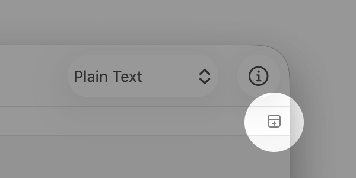

エディタを分割する
MacでCotEditorアプリ
 に移動します。
に移動します。以下のいずれかの操作を行います:
「表示」＞「エディタを分割」と選択します。
ナビゲーションバーの右端のアイコンをクリックします。
分割されたエディタを閉じるには、「表示」＞「分割エディタを閉じる」と選択するか、ナビゲーションバーの左に追加される「エディタを分割」アイコンをクリックします。
「表示」＞「分割エディタを縦に（横に）配置」と選択して、現在のエディタの分割の方向を変更することもできます。
エディタを分割して書類の異なる箇所を同時に表示して編集することができます。

MacでCotEditorアプリ に移動します。
に移動します。
以下のいずれかの操作を行います:
「表示」＞「エディタを分割」と選択します。
ナビゲーションバーの右端のアイコンをクリックします。
分割されたエディタを閉じるには、「表示」＞「分割エディタを閉じる」と選択するか、ナビゲーションバーの左に追加される「エディタを分割」アイコンをクリックします。
「表示」＞「分割エディタを縦に（横に）配置」と選択して、現在のエディタの分割の方向を変更することもできます。